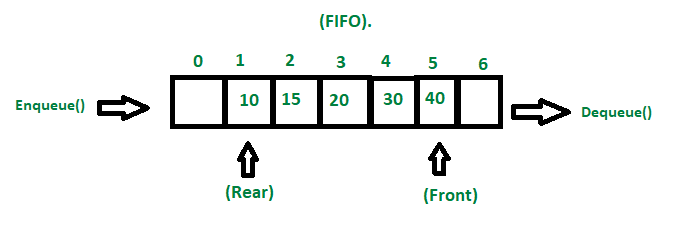

What is a queue?
A queue is a very simple type of data structure that is like a grocery line. It follow what we call, "FIFO":
First In First Out, which means that the first item that is added into the data structure is the
first item to come out. Adding an item to the cue is called enqueueing while
removing an item is called dequeueing.

Psudocode for Binary Search Tree(Click me!)
1. Function Enqueue(Argument ToInsert)
2. Check if the queue is full.
3. If the Front is equal to 0 and the Rear is equal N-1, the queue overflows and returns.
4. Otherwise, set the Rear to Rear + 1.
5. Set the Queue's Rear to the ToInsert.
6. Return the function.
7. Function Dequeue
8. If the queue is empty, the queue overflows and returns.
9. If there is currently only one item, delete that item and note that the queue is empty.
10. Otherwise, delete the last item in the queue and return.
Example of Queue(Click me!)
What the queue looks like:

Make a queue called Queue.
insert the number 10
insert the number 8
insert the number 12
insert the number 16
insert the number 9
insert the number 20
insert the number 18
insert the number 5
Delete
OUTPUT:
8, 12, 16, 9, 20, 18, 5

Thanks for reading this article! I hope you enjoyed.
Back to main page